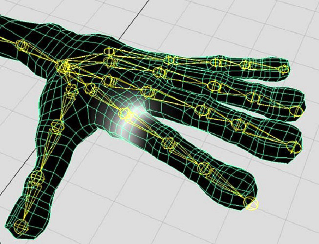
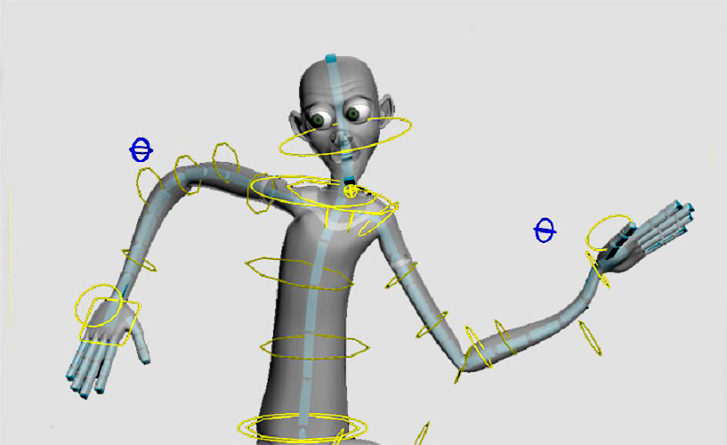
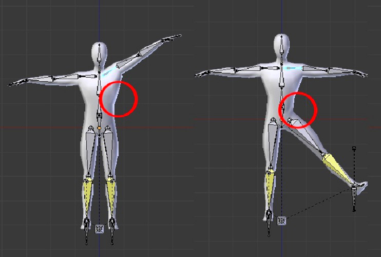

Риггинг и скиннинг
Между моделированием модели и её анимацией стоит еще один важнейший этап – это риггинг. Звучит немного странно, не так ли? Риггинг – это процесс построение скелетона, проще говоря, скелета модели, чтобы, привязав к нему модель можно было её двигать.

Процесс создания скелетона довольно сложный и трудоёмкий. Существует даже отдельная профессия, связанная только с его построением. Он заключается в построении по всему телу модели набора или наборов «костей», так называемых «джоинтов», связывании их между собой в правильной иерархической последовательности, и установлении определённых параметров для возможных трансформаций этих костей. К примеру, на пару джоинтов, отвечающих за движение локтя, применяется особая функция, отвечающая за движения суставов. Она не даёт им выгибаться в другую сторону.
После риггинга всегда следует скиннинг – это привязка простроенного скелетона к собственно модели и назначение областей воздействия каждого джоинта на модели. Например, чтобы при поднятии руки не захватывалась и не деформировалась часть торса. Кстати, самой сложной частью тела, как для риггинга, так и для скиннинга являются руки.

Для того чтобы правильно строить скелетоны нужно иметь перед собой примеры настоящих скелетов – гуманоидных или нет, но расположение и количество джоинтов обычно похоже на реальные скелеты. Конечно, нет необходимости строить, к примеру, ребра – они не используются в анимации, или столько же джоинтов, сколько позвонков в позвоночнике. Да, они нужны – ведь спина подвижна, но такое количество явно излишне.

При создании скелетона какой-либо техники необходимо представлять, как двигаются и будут анимироваться те или иные её части. Например, при анимации космического корабля надо представлять куда будут уходить открывающиеся двери или двигаться руль.
Риггинг бывает разных уровней. От построения скелетона для мультяшного червячка до риггинга полноценного человеческого персонажа с развитой мимикой, разнообразной одеждой и кучей мелких аксессуаров вроде цепочек, ножей, браслетов и т.д., которые должны соблюдать законы физики.
В общем, подобная работа является необходимым этапов при создании анимированного ролика, и она также востребована на рынке профессий – в фирмах, занимающихся 3D продукцией. Например, для игровой индустрии или для создания фильмов и мультиков. Есть целые команды людей, занимающихся исключительно риггингом и скиннингом.